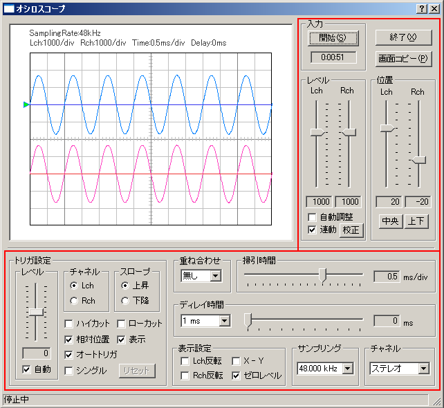

| 項目 | 説明 | |
|---|---|---|
| 開始 | オシロスコープを開始します。 | |
| 終了 | オシロスコープを終了します。 | |
| 画面コピー | 画面のスナップショット機能です。ボタンをクリックした時点のグラフウインドウを別ウィンドウで表示します。測定中にスナップショットとして、測定画面だけの小画面を別画面として並べて、いくつでも作れます。これは画像を取り込むときや、測定中に測定画面を選択して選ぶときに、非常に便利です。リアルタイムアナライザは、測定画像が測定中動いていますので、適当な画像を保存するとしても、スナップショットで、たくさんの中から選択してできるのと、クリップボードに取り込んだ画面で保存してから選択するのでは、手間に違いがあります。また保存する目的がデータ比較である場合、スナップショットの場合は、一度にたくさんの測定画像を比較表示できます。 | |
| レベル | 振幅幅の調整を行います。[自動調整]にチェックを入れると、入力された信号の振幅に合わせて、自動的に最適なレベルに調整します。[校正]ボタンで入力値を電圧で表示することができます。 | |
| 位置 | 波形の0レベルの位置（上下方向）をスライダで調整します。[中央]ボタンをクリックすると、左右のチャネルとも中央に配置して表示します。[上下]ボタンをクリックすると、Lchの波形とRchの波形を上下にずらして配置して表示します。 | |
| 項目 | 説明 | |
|---|---|---|
| トリガ設定 | レベル | トリガレベルを設定します。このレベルを入力信号が通過するとトリガが掛かり、スイープを開始します。[自動]にチェックを入れると、入力信号の振幅の中央にトリガレベルを自動調整します。 |
| チャネル | トリガの対象となるチャネルを選択します。 | |
| スロープ | 波形が上昇、下降方向のどちらでトリガされるかを選択します。 上昇：波形が上方向にトリガレベルを越えたときにトリガされる。 下降：波形が下方向にトリガレベルを越えたときにトリガされる。 | |
| ハイカット | 高い周波数成分をカットした信号でトリガを掛けます。高域ノイズが多くトリガが安定しない場合に有効です。 | |
| ローカット | 低い周波数成分をカットした信号でトリガを掛けます。低域ノイズが多くトリガが安定しない場合に有効です。 | |
| 相対位置 | トリガレベルを[位置]設定に係わらず、0レベルから相対的に設定します。このチェックが外れているときは、画面上の絶対位置となります。 | |
| 表示 | トリガの開始レベルを緑の△マークで表示します。 | |
| オートトリガ | チェックを入れると、一定期間トリガされない場合でもスイープを行います。 | |
| シングル | 一度トリガが掛かると、[リセット]ボタンをクリックするまで次のトリガが掛からなくなります。単発の信号を観測したい場合に使用します。 | |
| リセット | 「シングル」機能を使用した際のとトリガのリセットを行う。 | |
| 重ね合わせ | 重ね合わせ（残像）機能です。設定した回数分の過去の波形を、残像のように表示する機能です。 | |
| 掃引時間 | 1div(時間軸1目盛)あたりの時間を設定します。 | |
| ディレイ時間 | トリガトリガが掛かった後にスイープを開始するまでの時間を設定します。BのレンジをA{1ms，10ms，100ms，1000ms}から選んで設定してから、ディレイ幅（＝Cに表示される）をスライダで調節します。例えば、Aで「1ms」を選んだときはBは0?1 msの範囲で設定できます。Aが10msのときはBは0?10 ms、Aが「100 ms」のときはBは0?100ms， Aが「1000 ms」のときはBは0?1000 msとなります。 | |
| 表示設定 | Lch 反転 | CH1の波形を上下反転させます。 |
| Rch 反転 | CH2の波形を上下反転させます。 | |
| X-Y | CH1を縦軸，CH2を横軸に入力して、リサージュ波形を表示します。緑色で表示されます。 | |
| ゼロレベル | ゼロレベルを左チャネルは青、右チャネルは赤い線で表示します。 | |
| サンプリング | A/Dコンバータのサンプリングレートを設定します。 | |
| チャネル |
モノラル：サウンドカードのモノラルモードで入力される信号を測定する。
ステレオ： Lチャンネル（水色）とRチャンネル（ピンク）を測定。
左（Ｌ）のみ：Lチャンネルを表示。
右（Ｒ）のみ：Rチャンネルを表示。
差分（Ｌ?Ｒ）：左右のチャンネルの差分を表示。※サウンドカードの仕様によっては、モノラルモードの時に左右の信号が混合される場合があります。そのため、左右のどちらか一方を測定する場合は、モノラルモードではなく、左（Ｌ）のみ、右（Ｒ）のみ、をご使用ください。
|
|
| 入力デバイスの選択 | 説明 |
|---|---|
| WAVE | Windows Media PlayerやRA付属のシグナルジェネレータなど、パソコン内部で作られる音響信号をリアルタイムに波形表示するとき選択します。 |
| SWシンセサイザ（MIDI） | シンセサイザーの出力音響信号をリアルタイムに波形表示するとき選択します。 |
| CDプレーヤー | 音楽CDに記録された試験信号、音楽などをリアルタイムに波形表示するとき選択します。 |
| マイク | 内臓マイク、または外部マイク端子に接続した機器（マイクアンプ、外部プレーヤー、外部アンプ、パソコンの出力など）の信号を波形表示するときに使用します。 |
| telephony | Windowsのtelephonyで選択された電話などのモデム入力の音響信号をリアルタイムに波形表示するとき使用します。 |
| PCBeep | 左右のチャンネル間の位相差を周波数ごとに表示します。 |